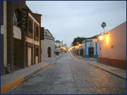

Data de la fundación de Monterrey hace más de 400 años y actualmente es
sede de la arquidiócesis local. La construcción fue larga, en 1791 se habían
terminado las bóvedas y la fachada con sus actuales características, pero aún
no estaban las torres que hoy la distinguen. Éstas se construyeron en el
lapso de un siglo. Debido al largo proceso de construcción, presenta una
conjunción de distintos estilos arquitectónicos armónicamente combinados,
predominando el Churrigueresco.
El espacio interior de sobrio diseño, resguarda varias pinturas novohispanas
del siglo XIX. Sobresale en la decoración del interior y en la fachada la
directriz de los franciscanos, religiosos que dejaron su huella fundadora en
casi todo el norte de México. Ahí mismo se puede visitar el Mausoleo de los
Obispos.
La Macro Plaza o Gran Plaza es, ciertamente, el punto focal del centro de la ciudad. A lo largo de sus 40 hectáreas se extiende una serie de plazas pequeñas que contienen fuentes, bancas, árboles, áreas verdes, así como monumentos y edificaciones históricas, entre las que destaca el Faro de Comercio, el cual domina el paisaje y es el más alto de México. En este gigantesco espacio también se ubican la Catedral de Monterrey, el Teatro de la Ciudad, la Explanada de los Héroes, el Palacio de Gobierno, el Museo del Palacio de Gobierno y la Fuente de la Vida.

Se caracteriza por sus casas hechas de adobe y ladrillo, antigua arquitectura colonial que prevalecía en Monterrey a principios de 1890, que fueron restauradas conservando el estilo de antaño para abrir galerías de arte, cafés, restaurantes, bares y discotecas, convirtiéndose así en el corazón cultural y social de Monterrey. Es recomendable dar un recorrido a pie o en calandria por este bello lugar durante el día para sentir lo que era vivir en los tiempos del viejo Monterrey, con calles empedradas, faroles y antiguas construcciones que definen el ambiente.
